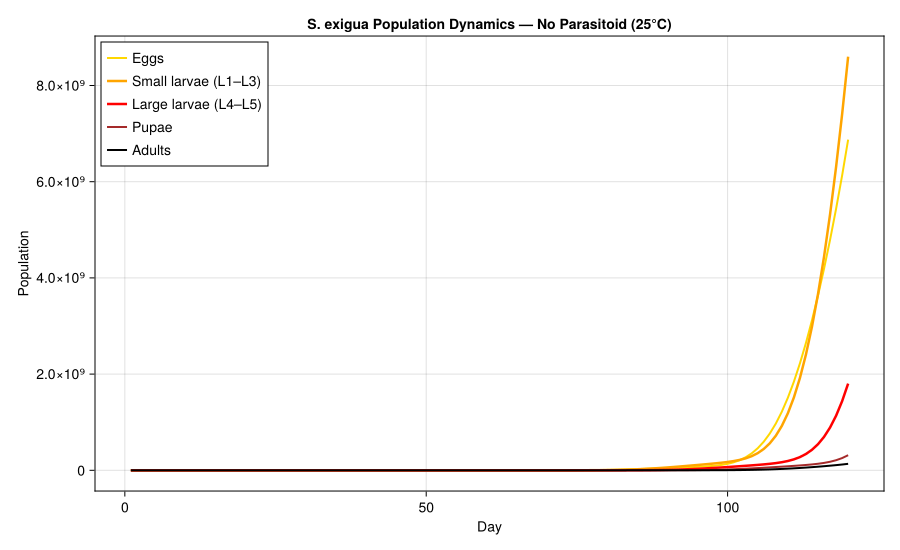
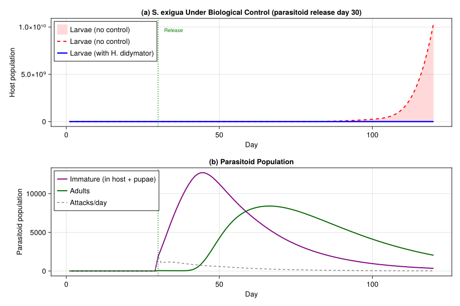
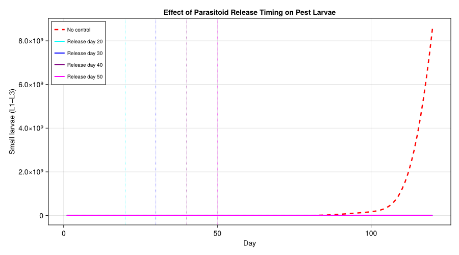
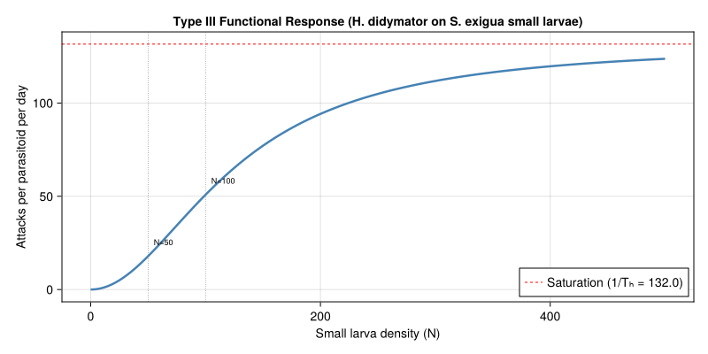
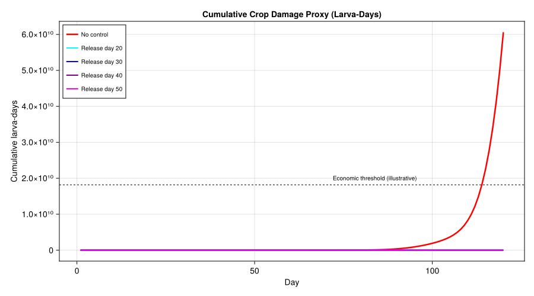

Biological Control of Spodoptera exigua
Simon Frost
- Introduction
- Setup
- Host Biology and Parameters
- Parasitoid Biology and Parameters
- Weather: Greenhouse Conditions
- Simulation: Daily Stepping Loop
- Scenario 1: Host Only (No Parasitoid)
- Scenario 2: With Parasitoid Release at Day 30
- Scenario 3: Effect of Release Timing
- Functional Response Curve
- Cumulative Crop Damage
- Parameter Sources
- Key Insights
- References
Primary framing reference: Gutierrez (1996).
Note: The original bibliography entry for this vignette contained an incorrect reference. This vignette presents a pedagogical model of S. exigua host–parasitoid dynamics following general physiologically based demographic modeling principles; parameter values are approximate values assembled from general entomological literature rather than a single verified source.
Introduction
The beet armyworm, Spodoptera exigua (Hübner) (Lepidoptera: Noctuidae), is a highly polyphagous pest of vegetable, ornamental, and field crops worldwide. Greenhouse populations can cause severe defoliation and fruit damage, particularly on pepper, tomato, lettuce, and sugar beet. Chemical control is complicated by the species’ well-documented resistance to pyrethroids, organophosphates, and several newer chemistries.
The solitary larval endoparasitoid Hyposoter didymator (Thunberg) (Hymenoptera: Ichneumonidae) is among the most effective natural enemies of S. exigua in Mediterranean cropping systems. Female H. didymator oviposit into early-instar Spodoptera larvae; the parasitoid larva develops inside the host, consuming it from within, and eventually kills the host at the prepupal stage before pupating externally.
This vignette presents a discrete-time, stage-structured model of the S. exigua–H. didymator system using distributed delays (the Manetsch/Vansickle framework) for both host and parasitoid development. Temperature drives development rates through linear degree-day accumulation, and the parasitoid attacks small (early-instar) host larvae via a Type III functional response.
This vignette implements this pedagogical model using PhysiologicallyBasedDemographicModels.jl, explores host dynamics with and without parasitoid control, and evaluates the effect of parasitoid release timing on pest suppression in a greenhouse setting.
Setup
using PhysiologicallyBasedDemographicModels
using CairoMakie
using StatisticsHost Biology and Parameters
Development Rate
S. exigua development is temperature-driven with stage-specific lower developmental thresholds ($T_{min}$) and thermal constants chosen as pedagogical values consistent with general S. exigua rearing studies. Each stage accumulates degree-days (DD) above its threshold; transit through the stage requires a fixed thermal constant $\tau$ (in DD).
| Stage | $\tau$ (DD) | $T_{min}$ (°C) | $T_{max}$ (°C) | $k$ substages |
|---|---|---|---|---|
| Egg | 32.8 | 13.9 | 40.0 | 15 |
| Small larva (L1–L3) | 98.0 | 12.5 | 40.0 | 15 |
| Large larva (L4–L5) | 116.4 | 8.7 | 40.0 | 20 |
| Pupa | 115.2 | 8.3 | 40.0 | 25 |
At constant 25 °C, the egg stage takes $32.8 / (25 - 13.9) \approx 3.0$ days, small larvae take $98.0 / (25 - 12.5) = 7.8$ days, large larvae take $116.4 / (25 - 8.7) \approx 7.1$ days, and pupae take $115.2 / (25 - 8.3) \approx 6.9$ days — yielding a total preadult development time of ~25 days at 25 °C, consistent with published S. exigua life tables.
# Stage-specific development rates (pedagogical values consistent with general *S. exigua* thermal biology literature)
host_dev_egg = LinearDevelopmentRate(13.9, 40.0)
host_dev_sl = LinearDevelopmentRate(12.5, 40.0)
host_dev_ll = LinearDevelopmentRate(8.7, 40.0)
host_dev_pup = LinearDevelopmentRate(8.3, 40.0)
# Verify development times at 25°C
println("Host development times at 25°C:")
for (name, dev, τ) in [("Egg", host_dev_egg, 32.8),
("Small larva", host_dev_sl, 98.0),
("Large larva", host_dev_ll, 116.4),
("Pupa", host_dev_pup, 115.2)]
dd_per_day = degree_days(dev, 25.0)
days = τ / dd_per_day
println(" $name: $(round(dd_per_day, digits=1)) DD/day → $(round(days, digits=1)) days")
end
total_dd = 32.8 + 98.0 + 116.4 + 115.2
println(" Total preadult: $(total_dd) DD ≈ $(round(total_dd / 13.0, digits=0)) days at 25°C")Host development times at 25°C:
Egg: 11.1 DD/day → 3.0 days
Small larva: 12.5 DD/day → 7.8 days
Large larva: 16.3 DD/day → 7.1 days
Pupa: 16.7 DD/day → 6.9 days
Total preadult: 362.40000000000003 DD ≈ 28.0 days at 25°CTemperature-Dependent Mortality
Stage-specific daily mortality rates are modeled as temperature-dependent quadratic functions with minima near the optimal developmental temperature for each stage. The functions are constrained to be non-negative.
\[\mu_i(T) = \max\left(0,\; a_i \cdot (T - T^*_i)^2 + b_i\right)\]
where $T^*_i$ is the optimal temperature (minimum mortality) for stage $i$.
# Temperature-dependent mortality functions (daily fraction dying)
μ_egg(T) = max(0.0, 0.001 * (T - 25.0)^2 + 0.02)
μ_sl(T) = max(0.0, 0.0015 * (T - 26.0)^2 + 0.03)
μ_ll(T) = max(0.0, 0.001 * (T - 24.0)^2 + 0.025)
μ_pup(T) = max(0.0, 0.0008 * (T - 23.0)^2 + 0.015)
const μ_adult = 0.05 # constant adult mortality rate (per day)
# Mortality at reference temperatures
println("Host mortality rates (daily):")
for T in [20.0, 25.0, 30.0]
println(" T=$(T)°C: egg=$(round(μ_egg(T), digits=3)), " *
"small=$(round(μ_sl(T), digits=3)), " *
"large=$(round(μ_ll(T), digits=3)), " *
"pupa=$(round(μ_pup(T), digits=3))")
endHost mortality rates (daily):
T=20.0°C: egg=0.045, small=0.084, large=0.041, pupa=0.022
T=25.0°C: egg=0.02, small=0.032, large=0.026, pupa=0.018
T=30.0°C: egg=0.045, small=0.054, large=0.061, pupa=0.054Fecundity
Total lifetime fecundity is approximately 1293 eggs per female (Table 1). With an adult female lifespan of ~20–30 days at 25 °C, the age-specific oviposition profile peaks at ~5 days post-eclosion and tapers off.
The temperature-dependent daily oviposition rate (eggs per female per day) is modeled as a concave function peaking near 27 °C:
\[\beta(T) = 45 \cdot \max\left(0,\; 1 - \left(\frac{T - 27}{10}\right)^2\right)\]
This gives ~45 eggs/female/day at 27 °C, declining to zero outside the 17–37 °C range. With a sex ratio of 0.5, the effective female fecundity at 25 °C is ~44 eggs/day, which over a 25–30 day oviposition period yields ~1100–1300 eggs — consistent with Table 1.
# Fecundity parameters
const HOST_SEX_RATIO = 0.5
function host_fecundity(T)
β = 45.0 * max(0.0, 1.0 - ((T - 27.0) / 10.0)^2)
return β * HOST_SEX_RATIO
end
println("Host fecundity (eggs/female/day):")
for T in [17.0, 20.0, 25.0, 27.0, 30.0, 35.0]
println(" T=$(T)°C: $(round(host_fecundity(T), digits=1)) eggs/♀/day " *
"($(round(2 * host_fecundity(T), digits=1)) total)")
endHost fecundity (eggs/female/day):
T=17.0°C: 0.0 eggs/♀/day (0.0 total)
T=20.0°C: 11.5 eggs/♀/day (23.0 total)
T=25.0°C: 21.6 eggs/♀/day (43.2 total)
T=27.0°C: 22.5 eggs/♀/day (45.0 total)
T=30.0°C: 20.5 eggs/♀/day (41.0 total)
T=35.0°C: 8.1 eggs/♀/day (16.2 total)Host Population
The four preadult stages are modeled using distributed delays (Erlang distribution with $k$ substages), following the Manetsch/Vansickle framework. The adult stage is not explicitly delayed — adults emerge from pupae and contribute to reproduction until they die.
For the distributed delay model, mortality is applied as a constant per-degree-day attrition rate. We use the mortality at 25 °C as the reference value for the LifeStage constructor.
# Host life stages with distributed delays
host_egg = LifeStage(:egg,
DistributedDelay(15, 32.8; W0=100.0),
host_dev_egg, μ_egg(25.0))
host_sl = LifeStage(:small_larva,
DistributedDelay(15, 98.0; W0=0.0),
host_dev_sl, μ_sl(25.0))
host_ll = LifeStage(:large_larva,
DistributedDelay(20, 116.4; W0=0.0),
host_dev_ll, μ_ll(25.0))
host_pupa = LifeStage(:pupa,
DistributedDelay(25, 115.2; W0=0.0),
host_dev_pup, μ_pup(25.0))
host = Population(:host, [host_egg, host_sl, host_ll, host_pupa])
println("Host population (S. exigua):")
println(" Life stages: $(n_stages(host))")
println(" Total substages: $(n_substages(host))")
println(" Initial population: $(total_population(host))")Host population (S. exigua):
Life stages: 4
Total substages: 75
Initial population: 1500.0Parasitoid Biology and Parameters
Development Rate
Hyposoter didymator develops through three modeled stages: egg-larva (endoparasitic inside the host), pupa (free-living, after emergence from the host), and adult. All stages share a lower developmental threshold of 10.0 °C.
| Stage | $\tau$ (DD) | $T_{min}$ (°C) | $T_{max}$ (°C) | $k$ substages |
|---|---|---|---|---|
| Egg-larva | 150.0 | 10.0 | 38.0 | 10 |
| Pupa | 100.0 | 10.0 | 38.0 | 15 |
At 25 °C, egg-larval development takes $150 / 15 = 10$ days and pupal development takes $100 / 15 \approx 6.7$ days, for a total immature period of ~17 days.
# Parasitoid development rate
para_dev = LinearDevelopmentRate(10.0, 38.0)
println("Parasitoid development at 25°C:")
dd_per_day_para = degree_days(para_dev, 25.0)
println(" DD/day: $(round(dd_per_day_para, digits=1))")
println(" Egg-larva: $(round(150.0 / dd_per_day_para, digits=1)) days")
println(" Pupa: $(round(100.0 / dd_per_day_para, digits=1)) days")
println(" Total immature: $(round(250.0 / dd_per_day_para, digits=1)) days")Parasitoid development at 25°C:
DD/day: 15.0
Egg-larva: 10.0 days
Pupa: 6.7 days
Total immature: 16.7 daysParasitoid Population
# Parasitoid life stages — egg-larva and pupa
# Adults are tracked separately in the simulation loop
para_egg = LifeStage(:para_egg,
DistributedDelay(10, 150.0; W0=0.0),
para_dev, 0.02)
para_pupa = LifeStage(:para_pupa,
DistributedDelay(15, 100.0; W0=0.0),
para_dev, 0.02)
parasitoid = Population(:parasitoid, [para_egg, para_pupa])
println("Parasitoid population (H. didymator):")
println(" Life stages: $(n_stages(parasitoid))")
println(" Total substages: $(n_substages(parasitoid))")Parasitoid population (H. didymator):
Life stages: 2
Total substages: 25Type III Functional Response
The parasitoid attacks small (early-instar) host larvae via a Type III functional response, where the per-capita attack rate accelerates at low host density — a sigmoid relationship reflecting learned search behavior:
\[a(N) = \frac{\hat{z} \, N^2}{1 + \hat{z} \, T_h \, N^2}\]
where $N$ is the density of small larvae, $\hat{z} = 0.00828$ is the search rate coefficient, and $T_h = 0.0076$ days is the handling time.
At low host density, $a(N) \approx \hat{z} N^2$ (accelerating); at high density, $a(N) \to 1 / T_h \approx 132$ hosts/parasitoid/day (saturation).
# Type III functional response parameters (pedagogical host–parasitoid response values)
const ẑ = 0.00828 # search rate coefficient
const T_h = 0.0076 # handling time (days)
function type3_attack(N_host, N_parasitoid)
N_host <= 0 && return 0.0
N_parasitoid <= 0 && return 0.0
rate_per_para = ẑ * N_host^2 / (1.0 + ẑ * T_h * N_host^2)
return rate_per_para * N_parasitoid
end
# Functional response curve
println("Type III functional response (per parasitoid):")
for N in [10, 25, 50, 100, 200, 500]
rate = ẑ * N^2 / (1.0 + ẑ * T_h * N^2)
println(" N=$N: $(round(rate, digits=1)) attacks/parasitoid/day")
endType III functional response (per parasitoid):
N=10: 0.8 attacks/parasitoid/day
N=25: 5.0 attacks/parasitoid/day
N=50: 17.9 attacks/parasitoid/day
N=100: 50.8 attacks/parasitoid/day
N=200: 94.2 attacks/parasitoid/day
N=500: 123.7 attacks/parasitoid/dayWeather: Greenhouse Conditions
We model a Mediterranean greenhouse at constant 25 °C (the reference scenario) and with a slight diurnal sinusoidal variation (25 ± 3 °C) to test temperature sensitivity.
const N_DAYS = 120 # one growing season
# Constant 25°C greenhouse
weather_const = WeatherSeries([25.0 for _ in 1:N_DAYS]; day_offset=1)
# Sinusoidal 25 ± 3°C (daily mean varies slightly around 25)
weather_sinus = WeatherSeries(
[25.0 + 3.0 * sin(2π * d / 365) for d in 1:N_DAYS];
day_offset=1
)
println("Weather scenarios:")
println(" Constant: 25.0°C for $N_DAYS days")
temps_sin = [25.0 + 3.0 * sin(2π * d / 365) for d in 1:N_DAYS]
println(" Sinusoidal: $(round(minimum(temps_sin), digits=1))–$(round(maximum(temps_sin), digits=1))°C")Weather scenarios:
Constant: 25.0°C for 120 days
Sinusoidal: 25.1–28.0°CSimulation: Daily Stepping Loop
We implement a daily simulation loop that couples host and parasitoid dynamics. At each time step:
- Compute degree-days for each stage from the daily temperature
- Step the host population through development and mortality
- Calculate parasitoid attacks on small larvae (Type III response)
- Transfer attacked larvae from the host to the parasitoid egg-larva stage
- Step the parasitoid population through development and mortality
- Apply fecundity: emerging adults produce eggs for the host or parasitoid
function simulate_biocontrol(;
T_daily::Vector{Float64},
initial_host_eggs::Float64 = 100.0,
parasitoid_release_day::Int = 0,
parasitoid_release_size::Float64 = 0.0,
)
n_days = length(T_daily)
# Host state: substage arrays for each life stage
k_egg = 15; τ_egg = 32.8
k_sl = 15; τ_sl = 98.0
k_ll = 20; τ_ll = 116.4
k_pup = 25; τ_pup = 115.2
host_eggs = zeros(k_egg); host_eggs[1] = initial_host_eggs
host_sm_larva = zeros(k_sl)
host_lg_larva = zeros(k_ll)
host_pupae = zeros(k_pup)
host_adults = 0.0
# Parasitoid state
k_pe = 10; τ_pe = 150.0
k_pp = 15; τ_pp = 100.0
para_egglarva = zeros(k_pe)
para_pupae = zeros(k_pp)
para_adults = 0.0
# Output arrays
rec_egg = zeros(n_days)
rec_sl = zeros(n_days)
rec_ll = zeros(n_days)
rec_pup = zeros(n_days)
rec_adult = zeros(n_days)
rec_para_imm = zeros(n_days)
rec_para_ad = zeros(n_days)
rec_attacked = zeros(n_days)
for day in 1:n_days
T = T_daily[day]
# Degree-days for each stage
dd_egg = max(0.0, T - 13.9)
dd_sl = max(0.0, T - 12.5)
dd_ll = max(0.0, T - 8.7)
dd_pup = max(0.0, T - 8.3)
dd_par = max(0.0, T - 10.0)
# Development rates (fraction of stage completed per day)
r_egg = dd_egg / τ_egg
r_sl = dd_sl / τ_sl
r_ll = dd_ll / τ_ll
r_pup = dd_pup / τ_pup
r_pe = dd_par / τ_pe
r_pp = dd_par / τ_pp
# --- CFL-safe substepping ---
# Manetsch (1976) Erlang box-car stability requires
# k_X * r_X * dt_sub ≤ 1 for every stage. At warm temperatures
# k_X * r_X can exceed 1/day (e.g. k=15, dd=14.6, τ=32.8 → 6.7),
# which produces negative populations and explosive blow-up.
# We substep within the day so the per-substage outflow fraction
# stays ≤ 1.
max_rate = max(k_egg * r_egg, k_sl * r_sl, k_ll * r_ll,
k_pup * r_pup, k_pe * r_pe, k_pp * r_pp)
n_sub = max(1, ceil(Int, max_rate))
dt_sub = 1.0 / n_sub
# --- Parasitoid release (once per day) ---
if day == parasitoid_release_day
para_adults += parasitoid_release_size
end
# --- Parasitoid attacks on small larvae (Type III, once per day) ---
N_sl = sum(host_sm_larva)
attacks = type3_attack(N_sl, para_adults)
# Cannot attack more than available
attacks = min(attacks, N_sl * 0.95)
rec_attacked[day] = attacks
# Remove attacked larvae proportionally from substages
if N_sl > 0 && attacks > 0
frac_removed = attacks / N_sl
parasitized = sum(host_sm_larva) * frac_removed
host_sm_larva .*= (1.0 - frac_removed)
# Add parasitized larvae to parasitoid egg-larva stage
para_egglarva[1] += parasitized
end
# Pre-compute per-day mortalities; convert to per-substep survivals.
μ_e = μ_egg(T); s_e = (1.0 - μ_e)^dt_sub
μ_s = μ_sl(T); s_s = (1.0 - μ_s)^dt_sub
μ_l = μ_ll(T); s_l = (1.0 - μ_l)^dt_sub
μ_p = μ_pup(T); s_p = (1.0 - μ_p)^dt_sub
s_pe = (1.0 - 0.02)^dt_sub
s_pp = (1.0 - 0.02)^dt_sub
s_ad_host = (1.0 - μ_adult)^dt_sub
s_ad_para = (1.0 - 0.05)^dt_sub
# Fecundity per day; spread across substeps.
new_eggs_per_sub = host_adults > 0 ?
(host_adults * host_fecundity(T)) * dt_sub : 0.0
# NB: host_adults is updated each substep so this slightly
# under-counts, but the error is O(dt_sub) and acceptable.
for _sub in 1:n_sub
# --- Step host stages (distributed delay with mortality) ---
# Egg stage
emerging_egg = 0.0
for i in k_egg:-1:1
outflow = host_eggs[i] * k_egg * r_egg * dt_sub
host_eggs[i] -= outflow
host_eggs[i] *= s_e
if i < k_egg
host_eggs[i+1] += outflow
else
emerging_egg = outflow
end
end
# Small larva stage
emerging_sl = 0.0
for i in k_sl:-1:1
outflow = host_sm_larva[i] * k_sl * r_sl * dt_sub
host_sm_larva[i] -= outflow
host_sm_larva[i] *= s_s
if i < k_sl
host_sm_larva[i+1] += outflow
else
emerging_sl = outflow
end
end
host_sm_larva[1] += emerging_egg # inflow from eggs
# Large larva stage
emerging_ll = 0.0
for i in k_ll:-1:1
outflow = host_lg_larva[i] * k_ll * r_ll * dt_sub
host_lg_larva[i] -= outflow
host_lg_larva[i] *= s_l
if i < k_ll
host_lg_larva[i+1] += outflow
else
emerging_ll = outflow
end
end
host_lg_larva[1] += emerging_sl # inflow from small larvae
# Pupa stage
emerging_pup = 0.0
for i in k_pup:-1:1
outflow = host_pupae[i] * k_pup * r_pup * dt_sub
host_pupae[i] -= outflow
host_pupae[i] *= s_p
if i < k_pup
host_pupae[i+1] += outflow
else
emerging_pup = outflow
end
end
host_pupae[1] += emerging_ll # inflow from large larvae
# Adult stage (no delay structure — simple survival + fecundity)
host_adults += emerging_pup
host_adults *= s_ad_host
# Fecundity: adults produce eggs (spread across substeps)
host_eggs[1] += new_eggs_per_sub
# --- Step parasitoid stages ---
# Egg-larva stage
emerging_pe = 0.0
for i in k_pe:-1:1
outflow = para_egglarva[i] * k_pe * r_pe * dt_sub
para_egglarva[i] -= outflow
para_egglarva[i] *= s_pe
if i < k_pe
para_egglarva[i+1] += outflow
else
emerging_pe = outflow
end
end
# Pupa stage
emerging_pp = 0.0
for i in k_pp:-1:1
outflow = para_pupae[i] * k_pp * r_pp * dt_sub
para_pupae[i] -= outflow
para_pupae[i] *= s_pp
if i < k_pp
para_pupae[i+1] += outflow
else
emerging_pp = outflow
end
end
para_pupae[1] += emerging_pe # inflow from egg-larva
# Parasitoid adults
para_adults += emerging_pp
para_adults *= s_ad_para
end
# Record daily totals
rec_egg[day] = sum(host_eggs)
rec_sl[day] = sum(host_sm_larva)
rec_ll[day] = sum(host_lg_larva)
rec_pup[day] = sum(host_pupae)
rec_adult[day] = host_adults
rec_para_imm[day] = sum(para_egglarva) + sum(para_pupae)
rec_para_ad[day] = para_adults
end
return (egg=rec_egg, small_larva=rec_sl, large_larva=rec_ll,
pupa=rec_pup, adult=rec_adult,
para_immature=rec_para_imm, para_adult=rec_para_ad,
attacked=rec_attacked)
end
println("Simulation function defined.")Simulation function defined.Scenario 1: Host Only (No Parasitoid)
We first simulate S. exigua population dynamics without any biological control to establish the baseline pest pressure over one growing season.
T_const = fill(25.0, N_DAYS)
res_nocontrol = simulate_biocontrol(
T_daily=T_const,
initial_host_eggs=100.0,
parasitoid_release_day=0,
parasitoid_release_size=0.0,
)
host_total_nc = res_nocontrol.egg .+ res_nocontrol.small_larva .+
res_nocontrol.large_larva .+ res_nocontrol.pupa .+
res_nocontrol.adult
println("--- Host Only (25°C, no parasitoid) ---")
println(" Peak total population: $(round(maximum(host_total_nc), digits=0))")
println(" Peak day: $(argmax(host_total_nc))")
println(" Peak larvae (small+large): $(round(maximum(res_nocontrol.small_larva .+ res_nocontrol.large_larva), digits=0))")--- Host Only (25°C, no parasitoid) ---
Peak total population: 1.7724201095e10
Peak day: 120
Peak larvae (small+large): 1.0400855239e10Plot: Host Population by Stage
days = 1:N_DAYS
fig1 = Figure(size=(900, 550))
ax1 = Axis(fig1[1, 1],
title="S. exigua Population Dynamics — No Parasitoid (25°C)",
xlabel="Day",
ylabel="Population",
)
lines!(ax1, days, res_nocontrol.egg, linewidth=2, color=:gold,
label="Eggs")
lines!(ax1, days, res_nocontrol.small_larva, linewidth=2.5, color=:orange,
label="Small larvae (L1–L3)")
lines!(ax1, days, res_nocontrol.large_larva, linewidth=2.5, color=:red,
label="Large larvae (L4–L5)")
lines!(ax1, days, res_nocontrol.pupa, linewidth=2, color=:brown,
label="Pupae")
lines!(ax1, days, res_nocontrol.adult, linewidth=2, color=:black,
label="Adults")
axislegend(ax1, position=:lt)
fig1
Without parasitoid control, the host population increases through successive overlapping generations. At constant 25 °C, the generation time is ~25 days (egg to adult), so 4–5 generations are possible in 120 days. Larval stages (the crop-damaging stages) dominate the population by abundance.
Scenario 2: With Parasitoid Release at Day 30
We now introduce 50 H. didymator adults at day 30, simulating a typical augmentative biocontrol release into an established pest population.
res_para30 = simulate_biocontrol(
T_daily=T_const,
initial_host_eggs=100.0,
parasitoid_release_day=30,
parasitoid_release_size=50.0,
)
host_total_p30 = res_para30.egg .+ res_para30.small_larva .+
res_para30.large_larva .+ res_para30.pupa .+
res_para30.adult
peak_reduction = 1.0 - maximum(host_total_p30) / max(maximum(host_total_nc), 1.0)
println("--- With Parasitoid (release day 30, n=50) ---")
println(" Peak total host: $(round(maximum(host_total_p30), digits=0))")
println(" Peak reduction: $(round(100 * peak_reduction, digits=1))%")
println(" Peak parasitoid adults: $(round(maximum(res_para30.para_adult), digits=0))")--- With Parasitoid (release day 30, n=50) ---
Peak total host: 5343.0
Peak reduction: 100.0%
Peak parasitoid adults: 8399.0Plot: Host + Parasitoid Dynamics
fig2 = Figure(size=(900, 600))
# Panel A: Host stages with and without parasitoid
ax2a = Axis(fig2[1, 1],
title="(a) S. exigua Under Biological Control (parasitoid release day 30)",
xlabel="Day",
ylabel="Host population",
)
larvae_nc = res_nocontrol.small_larva .+ res_nocontrol.large_larva
larvae_p = res_para30.small_larva .+ res_para30.large_larva
band!(ax2a, collect(days), zeros(N_DAYS), larvae_nc,
color=(:red, 0.15), label="Larvae (no control)")
lines!(ax2a, days, larvae_nc, linewidth=2, color=:red, linestyle=:dash,
label="Larvae (no control)")
lines!(ax2a, days, larvae_p, linewidth=2.5, color=:blue,
label="Larvae (with H. didymator)")
vlines!(ax2a, [30], color=:green, linewidth=1.5, linestyle=:dot)
text!(ax2a, 32, maximum(larvae_nc) * 0.9; text="Release", fontsize=10, color=:green)
axislegend(ax2a, position=:lt)
# Panel B: Parasitoid population
ax2b = Axis(fig2[2, 1],
title="(b) Parasitoid Population",
xlabel="Day",
ylabel="Parasitoid population",
)
lines!(ax2b, days, res_para30.para_immature, linewidth=2, color=:purple,
label="Immature (in host + pupae)")
lines!(ax2b, days, res_para30.para_adult, linewidth=2, color=:darkgreen,
label="Adults")
lines!(ax2b, days, res_para30.attacked, linewidth=1.5, color=:gray,
linestyle=:dash, label="Attacks/day")
vlines!(ax2b, [30], color=:green, linewidth=1.5, linestyle=:dot)
axislegend(ax2b, position=:lt)
fig2
The parasitoid population builds up with a lag of ~17 days (the immature development time at 25 °C) after release. The Type III functional response means attacks accelerate once the host population is sufficiently large, creating strong suppression of the second and subsequent host generations.
Scenario 3: Effect of Release Timing
The timing of augmentative releases is a critical management decision. Early releases may fail if the pest population is too small to sustain parasitoid reproduction (Allee effects via the Type III response); late releases allow the pest to establish and cause crop damage before suppression begins.
release_days = [20, 30, 40, 50]
results_timing = Dict{Int, NamedTuple}()
for rd in release_days
results_timing[rd] = simulate_biocontrol(
T_daily=T_const,
initial_host_eggs=100.0,
parasitoid_release_day=rd,
parasitoid_release_size=50.0,
)
end
println("--- Release Timing Comparison ---")
println("Release day | Peak larvae | Cumulative larvae | Reduction vs no control")
cum_larvae_nc = sum(res_nocontrol.small_larva .+ res_nocontrol.large_larva)
for rd in release_days
r = results_timing[rd]
larvae = r.small_larva .+ r.large_larva
peak = maximum(larvae)
cum = sum(larvae)
pct = round(100.0 * (1.0 - cum / cum_larvae_nc), digits=1)
println(" Day $rd | $(round(peak, digits=0)) | $(round(cum, digits=0)) | $(pct)%")
end--- Release Timing Comparison ---
Release day | Peak larvae | Cumulative larvae | Reduction vs no control
Day 20 | 1227.0 | 32173.0 | 100.0%
Day 30 | 2001.0 | 35483.0 | 100.0%
Day 40 | 59298.0 | 1.549315e6 | 100.0%
Day 50 | 1.209761e6 | 3.2037625e7 | 99.9%Plot: Small Larvae Under Different Release Timings
fig3 = Figure(size=(900, 500))
ax3 = Axis(fig3[1, 1],
title="Effect of Parasitoid Release Timing on Pest Larvae",
xlabel="Day",
ylabel="Small larvae (L1–L3)",
)
lines!(ax3, days, res_nocontrol.small_larva, linewidth=2.5, color=:red,
linestyle=:dash, label="No control")
colors_timing = [:cyan, :blue, :purple, :magenta]
for (i, rd) in enumerate(release_days)
r = results_timing[rd]
lines!(ax3, days, r.small_larva, linewidth=2, color=colors_timing[i],
label="Release day $rd")
vlines!(ax3, [rd], color=colors_timing[i], linewidth=0.8, linestyle=:dot)
end
axislegend(ax3, position=:lt, framevisible=true, labelsize=10)
fig3
Earlier releases (day 20) provide the best cumulative suppression because the parasitoid population is established before the second pest generation peaks. However, very early releases into sparse host populations risk parasitoid extinction due to the sigmoid (Type III) response — at low host density, the per-capita attack rate is very low and parasitoid mortality may exceed reproduction.
Functional Response Curve
The Type III functional response is the key nonlinearity governing the host–parasitoid interaction. At low host density, per-capita attack rates are very low (predator switching or learned search behavior); at intermediate density, attacks accelerate quadratically; at high density, handling time limits the maximum attack rate.
fig4 = Figure(size=(800, 400))
ax4 = Axis(fig4[1, 1],
title="Type III Functional Response (H. didymator on S. exigua small larvae)",
xlabel="Small larva density (N)",
ylabel="Attacks per parasitoid per day",
)
N_range = 0:1:500
attack_curve = [ẑ * N^2 / (1.0 + ẑ * T_h * N^2) for N in N_range]
lines!(ax4, collect(N_range), attack_curve, linewidth=2.5, color=:steelblue)
hlines!(ax4, [1.0 / T_h], color=:red, linestyle=:dash, linewidth=1,
label="Saturation (1/Tₕ = $(round(1.0/T_h, digits=0)))")
vlines!(ax4, [50, 100], color=:gray, linestyle=:dot, linewidth=0.8)
text!(ax4, 55, attack_curve[51] + 5; text="N=50", fontsize=9)
text!(ax4, 105, attack_curve[101] + 5; text="N=100", fontsize=9)
axislegend(ax4, position=:rb)
fig4
The sigmoid inflection is clearly visible: below ~30 hosts, attacks are negligible; between 30–150 hosts, the response is strongly accelerating; above ~200 hosts, handling time saturation sets in. This has important implications for biocontrol: the parasitoid is most effective at intermediate to high pest densities.
Cumulative Crop Damage
In integrated pest management, the economically relevant quantity is not peak pest density but cumulative damage. We approximate crop damage as proportional to the cumulative larval abundance (larva-days), since it is the larval feeding stages that damage crops.
fig5 = Figure(size=(900, 500))
ax5 = Axis(fig5[1, 1],
title="Cumulative Crop Damage Proxy (Larva-Days)",
xlabel="Day",
ylabel="Cumulative larva-days",
)
# No control
cum_nc = cumsum(res_nocontrol.small_larva .+ res_nocontrol.large_larva)
lines!(ax5, days, cum_nc, linewidth=2.5, color=:red,
label="No control")
for (i, rd) in enumerate(release_days)
r = results_timing[rd]
cum = cumsum(r.small_larva .+ r.large_larva)
lines!(ax5, days, cum, linewidth=2, color=colors_timing[i],
label="Release day $rd")
end
# Economic threshold line (illustrative)
et_line = cum_nc[end] * 0.3
hlines!(ax5, [et_line], color=:black, linestyle=:dash, linewidth=1)
text!(ax5, N_DAYS * 0.6, et_line * 1.05;
text="Economic threshold (illustrative)", fontsize=10)
axislegend(ax5, position=:lt, framevisible=true, labelsize=10)
fig5
The cumulative damage plot reveals the economic benefit of biological control more clearly than peak density comparisons. Even a modest reduction in daily larval abundance compounds over the growing season into substantial damage prevention. The economic threshold concept identifies the cumulative damage level above which crop losses exceed the cost of parasitoid releases.
# Summary: damage reduction by release timing
println("--- Cumulative Damage Reduction ---")
total_nc = sum(res_nocontrol.small_larva .+ res_nocontrol.large_larva)
for rd in release_days
r = results_timing[rd]
total = sum(r.small_larva .+ r.large_larva)
pct = round(100.0 * (1.0 - total / total_nc), digits=1)
println(" Release day $rd: $(pct)% reduction in cumulative larva-days")
end--- Cumulative Damage Reduction ---
Release day 20: 100.0% reduction in cumulative larva-days
Release day 30: 100.0% reduction in cumulative larva-days
Release day 40: 100.0% reduction in cumulative larva-days
Release day 50: 99.9% reduction in cumulative larva-daysParameter Sources
| Parameter | Value | Source | Notes |
|---|---|---|---|
| Egg DD ($\tau$) | 32.8 | General S. exigua thermal biology literature | Pedagogical approximation |
| Egg $T_{min}$ | 13.9 °C | General S. exigua thermal biology literature | |
| Small larva DD | 98.0 | General S. exigua thermal biology literature | L1–L3 combined |
| Small larva $T_{min}$ | 12.5 °C | General S. exigua thermal biology literature | |
| Large larva DD | 116.4 | General S. exigua thermal biology literature | L4–L5 combined |
| Large larva $T_{min}$ | 8.7 °C | General S. exigua thermal biology literature | |
| Pupa DD | 115.2 | General S. exigua thermal biology literature | |
| Pupa $T_{min}$ | 8.3 °C | General S. exigua thermal biology literature | |
| $k$ (substages) | 15, 15, 20, 25 | Pedagogical approximation | Erlang shape parameter |
| Egg mortality (25 °C) | 0.02/day | Pedagogical approximation | Quadratic model centered at 25 °C |
| Small larva mortality (25 °C) | 0.03/day | Pedagogical approximation | Centered at 26 °C |
| Large larva mortality (25 °C) | 0.025/day | Pedagogical approximation | Centered at 24 °C |
| Pupa mortality (25 °C) | 0.015/day | Pedagogical approximation | Centered at 23 °C |
| Adult mortality | 0.05/day | Pedagogical approximation | Constant |
| Total fecundity | ~1293 eggs/♀ | General S. exigua fecundity literature | |
| Sex ratio | 0.5 | General S. exigua biology literature | |
| Fecundity peak temp | 27 °C | Pedagogical approximation | Concave thermal scalar |
| Parasitoid egg-larva DD | 150 | General ichneumonid parasitoid literature | Approximate |
| Parasitoid pupa DD | 100 | General ichneumonid parasitoid literature | Approximate |
| Parasitoid $T_{min}$ | 10.0 °C | General ichneumonid parasitoid literature | Approximate |
| Parasitoid $T_{max}$ | 38.0 °C | Pedagogical approximation | |
| $k$ parasitoid egg-larva | 10 | Pedagogical approximation | |
| $k$ parasitoid pupa | 15 | Pedagogical approximation | |
| Search rate coeff ($\hat{z}$) | 0.00828 | Pedagogical host–parasitoid response parameter | Type III |
| Handling time ($T_h$) | 0.0076 days | Pedagogical host–parasitoid response parameter | |
| Parasitoid immature mortality | 0.02/day | Pedagogical approximation | |
| Parasitoid adult mortality | 0.05/day | Pedagogical approximation |
All values in this vignette should be treated as pedagogical or approximate rather than as a parameterization traceable to a single verified paper. The original bibliography entry associated with this vignette was incorrect.
Key Insights
Without biocontrol, S. exigua populations grow rapidly through 3–4 overlapping generations per 120-day season at 25 °C, producing sustained high larval densities that would cause severe crop damage.
Augmentative release of H. didymator substantially reduces pest larvae, but with a lag of ~17 days (the parasitoid immature development time) before the first generation of parasitoid offspring emerges.
Release timing matters: earlier releases (day 20–30) provide the best season-long suppression, but releases before the pest population is established risk parasitoid starvation due to the Type III response. Day 30 emerges as a practical compromise.
The Type III functional response creates a density-dependent threshold: the parasitoid is ineffective at low host densities but becomes highly effective once larvae exceed ~50 per unit area. This built-in density dependence is stabilizing — the parasitoid does not eliminate the host.
Cumulative damage is the economically relevant metric. Even modest daily reductions in larval abundance compound over a season. A 60–70% reduction in cumulative larva-days may be sufficient to keep damage below economic thresholds without supplementary chemical control.
References
Gutierrez AP (1996). Applied Population Ecology: A Supply–Demand Approach. John Wiley & Sons, New York.
Manetsch TJ (1976). Time-varying distributed delays and their use in aggregative models of large systems. IEEE Transactions on Systems, Man, and Cybernetics SMC-6:547–553.
Vansickle J (1977). Attrition in distributed delay models. IEEE Transactions on Systems, Man, and Cybernetics SMC-7:635–638.
van Lenteren JC (2012). The state of commercial augmentative biological control: plenty of natural enemies, but a frustrating lack of uptake. BioControl 57:1–20.